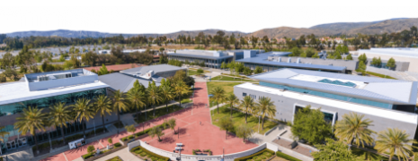
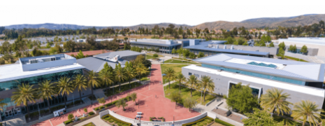

I am currently entering my second year of college at Santiago Canyon College with a Major in Computer Science. I originally attended Grand Canyon University for a semester,
but ended up transferring back home to Orange County. I plan on obtaining an Associate in Science for Transfer in Computer Science and transferring once more to a university
to obtain a Bachelor of Science in Computer Science or a similar major.
As for my current highest form of education, I have a high school diploma from Villa Park High
School, in which I obtained in 2024. Outside of school, I have earned knowledge and experience in cloud computing through Amazon Web Services as well as Microsoft Office
data management through Microsoft Office courses and my current job.